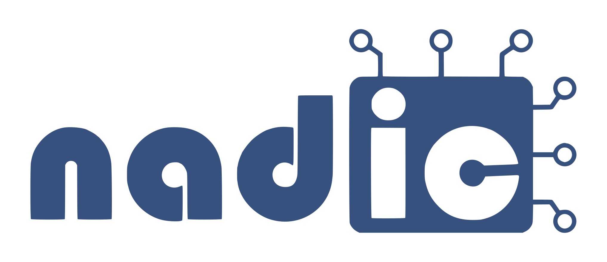
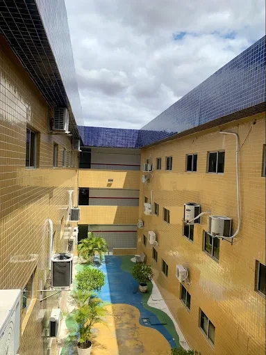
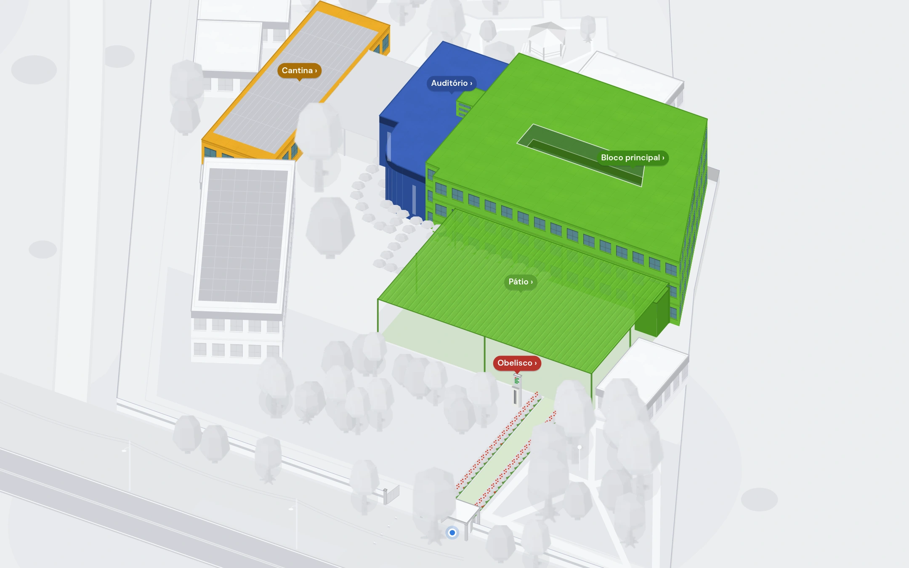
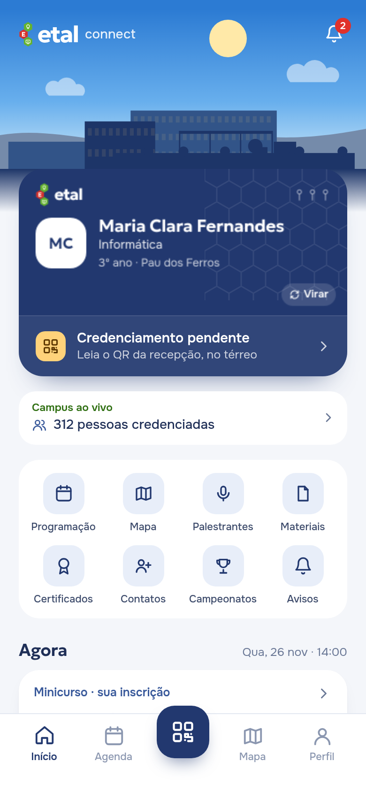
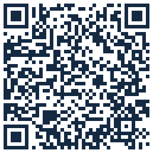
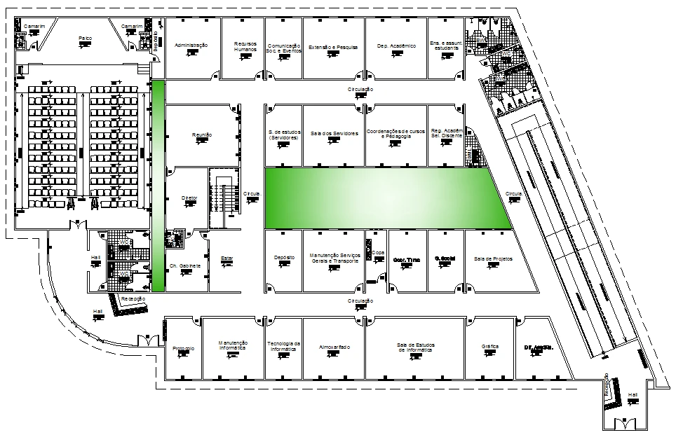
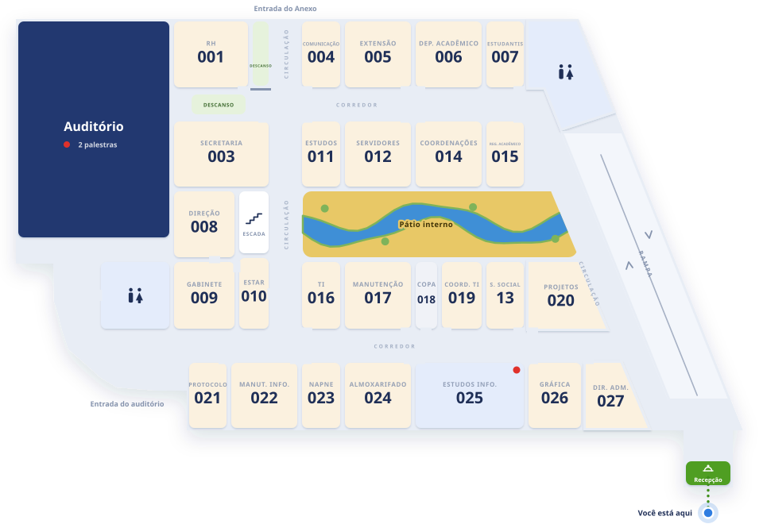
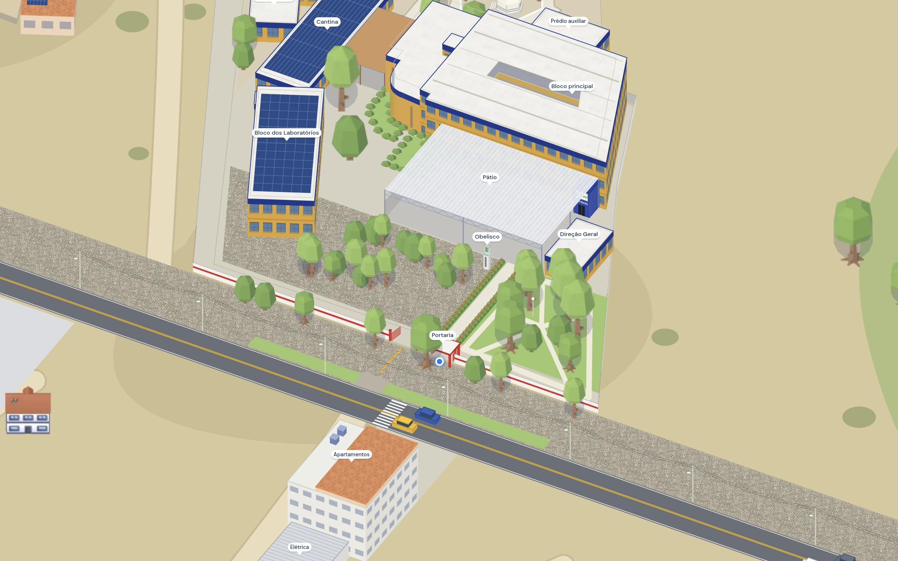
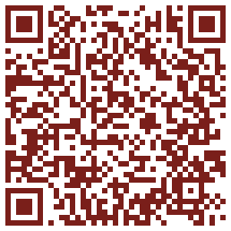

01 / AberturaETAL / Connect
ETAL Connect
Proposta de aplicativo para o ETAL · IFRN Pau dos Ferros

01 / AberturaETAL / Connect
Já começou?Onde é a sala?Como confirmo a presença?
02 / Para o participanteETAL / Connect

02
Capítulo 02
Para o participante
Entra com o SUAP e recebe o cracháMonta a agendaLê o QR da sala e confirma a presençaRecebe a troca de sala na horaMateriais depois da presençaConquistas e contatosAchar a sala
02 / Para o participanteETAL / Connect
Para o participante
1
Entra com o SUAP e recebe o crachá
- 1Entra com o SUAP e recebe o crachá
- 2Monta a agenda
- 3Lê o QR da sala e confirma a presença
- 4Recebe a troca de sala na hora
02 / Para o participanteETAL / Connect
2
Monta a agenda
- 1Entra com o SUAP e recebe o crachá
- 2Monta a agenda
- 3Lê o QR da sala e confirma a presença
- 4Recebe a troca de sala na hora
02 / Para o participanteETAL / Connect
3
Lê o QR da sala e confirma a presença
- 1Entra com o SUAP e recebe o crachá
- 2Monta a agenda
- 3Lê o QR da sala e confirma a presença
- 4Recebe a troca de sala na hora
02 / Para o participanteETAL / Connect
4
Recebe a troca de sala na hora
- 1Entra com o SUAP e recebe o crachá
- 2Monta a agenda
- 3Lê o QR da sala e confirma a presença
- 4Recebe a troca de sala na hora
02 / Para o participanteETAL / Connect
Materiais depois da presença
- Lê o QR da sala
- A presença é confirmada
- Slides e arquivos liberados
- Avalia a atividade
Proposta · hoje com materiais de exemplo
02 / Para o participanteETAL / Connect
Conquistas e contatos
02 / Para o participanteETAL / Connect
Achar a sala
- Busca a sala, o banheiro ou o bebedouro
- Rota a pé desde a portaria
- Escada ou rampa, andar por andar
03 / Organização e presençaETAL / Connect

03
Capítulo 03
Organização e presença
Painel da organizaçãoPresença: QR na portaPresença: QR na tela, mudandoPresença: a equipe lê o QR
03 / Organização e presençaETAL / Connect
Painel da organização
312credenciados
82na sala agora
96visitantes
Mudança de salaReact Native agora no Lab 210
Enviar a todosPresenças em CSV → certificados no SUAP

Mudança de salaReact Native agora no Lab 210
Mudança de salaReact Native agora no Lab 210
Mudança de salaReact Native agora no Lab 210
03 / Organização e presençaETAL / Connect
Presença: QR na porta

Lab 210Presença confirmada
foto do QR
em casa
Também confirma
Já funciona no app
Simples, sem equipe na salaA foto do QR funciona durante a aula
03 / Organização e presençaETAL / Connect
Presença: QR na tela, mudando
muda a cada 30 s
Presença confirmada
foto do QR
em casa
QR vencido
A implementar
A foto chega vencidaPrecisa de uma tela ligada na sala
03 / Organização e presençaETAL / Connect
Presença: a equipe lê o QR
ASAna BeatrizQR pessoal, muda a cada 30 s
equipe do credenciamento
Ana Beatriz · confirmada
print do QR
Não vale: código vencido
A implementar
Alguém vê quem está na salaPrecisa de uma pessoa por sala
04 / Próximos passosETAL / Connect
Da planta de 2012 ao mapa


05 / Apêndice técnicoETAL / Connect

05
Capítulo 05
Apêndice técnico
Como as peças se ligamO banco de dadosO QR é assinadoPor que PWASem internetComo a rota é calculadaEscada ou rampa?API documentada
05 / Apêndice técnicoETAL / Connect
Como as peças se ligam
CelularPWA
Site + APIFastAPI · Vercel (teste) · IFRN (produção)
BancoPostgreSQL
SUAPlogin do IFRN
05 / Apêndice técnicoETAL / Connect
O banco de dados
Pessoaparticipante, visitante ou organização
Agendasalvou a atividade
Presençaleu o QR na sala
Atividadehorário, sala e vagas
Avisoda organização para todos
Número de salanome de cada sala
Link de acessoentrada do visitante
7tabelas
05 / Apêndice técnicoETAL / Connect
O QR é assinado

atividade · react-nativeassinatura · -vsAoqlqItw…
API
- Assinatura confere
- Dentro do horário · 14:00–18:00
- Presença gravada · 14:22
- QR alterado: assinatura não confere
05 / Apêndice técnicoETAL / Connect
Por que PWA
PWAReact Native
Abre por um link
Instala sem loja de apps
Usa o mesmo mapa web
Funciona sem internet
Câmera para o QR
05 / Apêndice técnicoETAL / Connect
Sem internet
Servidor
Guardado no aparelho
- Com internet: tudo do servidor
- A rede cai
- O app abre do cache
- Programação, mapa e planta continuam
05 / Apêndice técnicoETAL / Connect
Como a rota é calculada
72 m≈ 1 min a pé
- Grade de 33 cm só nos corredores
- Dijkstra: o caminho de menor custo
- Parede e curva custam mais
- metros ÷ 75 = minutos
05 / Apêndice técnicoETAL / Connect
Escada ou rampa?
Escadaentrada do auditório0
Rampaentrada principal0
Subir escada pesa 1,6 × · rampa 1 ×
Escada, por pouco
05 / Apêndice técnicoETAL / Connect